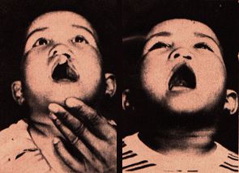
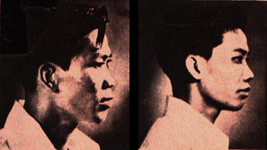
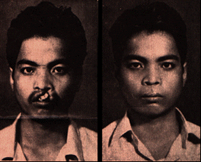

CLEFT PALATE is remedied early to cure speech deficiency before body structures grow to mature size, when operation will prove more difficult
TO ELEVATE flat nose, bone from hip bone is grafted, resulting in new contour
 HARELIP CURE,
done at early age favors full speech recovery avoids inferiority complex
that goes with it
HARELIP CURE,
done at early age favors full speech recovery avoids inferiority complex
that goes with itANOTHER harelip is given marvelous transformation, which provides new hopes for patient otherwise handicapped with one of nature's most excruciating "jokes"
BACK